1과목: 디지털전자회로
1. 다음 중 레지스터의 주 기능에 해당하는 것은?
2. 다음 중 트랜지스터 증폭기의 바이어스 안정도를 나타내는 숫자로 가장 좋은 것은?
3. 다음 중 시정수(Time Constant)에 대한 설명으로 옳지 않은 것은?
4. 10진수 10을 그레이코드(Gray code)로 변환한 것은?
5. 차동증폭기에서 두 입력 전압이 각각 V1=50[μV], V2=-50[μV]일 때 출력전압은 얼마인가? (단, Ad는 차신호 이득이며, CMRR=100 이다.)
6. 다음 중 교류 신호를 구성하는 기본적인 요소가 아닌 것은?
7. 다음 회로에 대하여 입력신호 일 때 출력파형은? (단, 제너다이오드의 순방향 전압은 0.7[V]이고, 제너전압은 4.7[V]이다.)
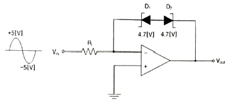
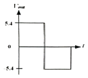
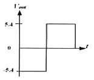
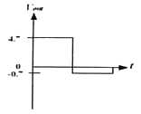
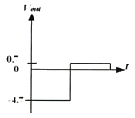
8. 다음 중 푸시풀 증폭기의 장점으로 옳지 않은 것은?
9. 다음 중 회선을 구성할 때 시분할 다중화 방식으로 하려면 어떠한 변조방식을 사용해야 하는가?
10. 4×1 MUX를 이용하여 16×1 MUX를 구현하려고 한다. 몇 개의 4×1 MUX가 필요한가?
11. 이미터 접지형 증폭긱에서 베이스 접지시의 전류증폭률 a=0.9, ICO=0.1[mA]일 때 컬렉터 전류는 얼마인가? (단, IB=0.5[mA])
12. PCM 방식의 단점으로 옳은 것은?
13. 평활회로에서 초크 입력형의 특징으로 옳은 것은?
14. 다음 발진회로의 설명으로 옳지 않은 것은?
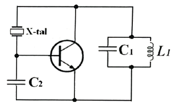
15. 다음 중 AM 슈퍼헤테로다인 수신기에 대한 설명으로 옳지 않은 것은?
16. 다음 중 멀티플렉서에 대한 설명으로 옳지 않은 것은?
17. 제너다이오드 정전압 회로에서 최대 부하전류가 20[mA]이고 제너전압이 5[V]일 때, 제너항복이 일어날 수 있는 최소 부하저항은 얼마인가?
18. 다음 정전압 회로에서 IZ는 얼마인가? (단, 제너전압(VZ)은 9[V]이다.)
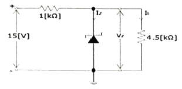
19. 다음 중 트랜지스터 증폭회로에서 입력 임피던스 설명으로 옳은 것은?
20. 다음의 논리회로에 대한 함수로 알맞은 것은?
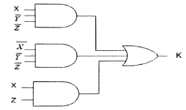
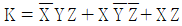
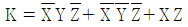
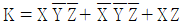
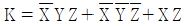
2과목: 유선통신기기
21. 영상을 전송할 수 있는 단말기가 아닌 것은?
22. 동기식 전송방식에서 문자중심 전송에서의 프레임구조에 관한 설명이다. 문자동기의 유지에 사용되는 것은?
23. PCM-24 방식의 표본화 주파수 8[kHz]에 대한 1프레임 당 시간은?
24. 다음 중 라우터(Router)에 대한 설명으로 틀린 것은?
25. 음성부호화기(VOCODER)에 대한 설명으로 옳은 것은?
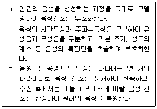
26. 데이터통신 단말기의 데이터 처리방식 중 일정량의 데이터를 일괄처리하는 방식은?
27. 다음은 비디오텍스의 하드웨어 구성 요소에 대한 설명으로 틀린 것은?
28. 공통선 신호 방식(CSS)에 대한 설명으로 옳지 않은 것은?
29. 전화망과 같은 회선교환망 대신에 인터넷과 같은 데이터 패킷망을 통하여 음성통화를 하는 것을 나타내는 용어는?
30. TDM장비 중 SMOT-4 광 전송장치에 대한 설명으로 틀린 것은?
31. 광통신 방식에 대한 설명으로 옳지 않은 것은?
32. 다음 중 3계층(네트워크 계층)에서 동작하는 장비는?
33. 다음 중 광케이블을 종단하여 광 단국장치와 연결 작업시 사용되지 않는 것은 무엇인가?
34. 다음 중 L2 스위치에 대한 설명으로 틀린 것은?
35. 라우터에서 라우팅 테이블을 만드는 방법에는 정적 라우팅(Static Routing)과 동적 라우팅(Dynamic Routing)이 있다. 다음 중 동적 라우팅에 대한 설명으로 틀린 것은?
36. 데이터의 입출력과 송수신을 담당하며, 정보통신 시스템과 접속되는 모든 입출력 장치를 말하는 것은?
37. 전자교환기의 통화회로에 의한 분류가 아닌 것은?
38. 다음의 설명 중에서 ATM(비동기식 전달 모드) 교환방식에 해당하지 않는 것은?
39. 다음 중 송신단에서 다수의 정보신호를 묶어서 하나의 전송채널로 보내주는 방법은?
40. 디지털통신에서 펄스의 폭 주기 동안 펄스의 존재 유무를 판별하는 순간 입력신호 성분을 최대로 강조하고 동시에 잡음성분을 억제하여 펄스의 존재유무의 판별 에러 확률을 가장 적게 하는 것은 무엇인가?
3과목: 전송선로개론
41. 서로 다른 네트워크 IP주소를 갖고 있는 LAN을 연결하여 통신이 가능하도록 하고 싶다. 이 때 필요한 네트워크 장비는 무엇인가?
42. 홈네트워크건물인증 심사기준에 의하면 세대내 홈네트워크 배선규격은 전기설비기술기준 및 KS 전선 규격의 판단기준에 따라 어떠한 조건을 만족하여야 하는가?
43. 구내통신선로설비에서 선로가 옥외에서 실내로 인입되는 경우 회선종단장치로 사용할 수 없는 것은?
44. 관로 경로 파악시 실제 현장에서 확인 해야 할 사항이 아닌 것은?
45. 다음 중 네트워크 구현을 지원하기 위하여 사용하는 케이블과 커넥터의 규격을 제정하는 단체는 어느 곳인가?
46. OSI 모델에서 물리주소, 네트워크 토폴로지, 네트워크 접속, 흐름 제어 들을 처리하는 계층은?
47. 2개의 시스템이 동시에 양방향으로 데이터 송수신이 가능하기 때문에 전송효율이 우수한 전송방식은?
48. 다음 중 정보 전송 부호화의 설명으로 틀린 것은?
49. 다음 중 세심 동축 케이블의 core구성으로 틀린 것은?
50. 다음 중 STP케이블의 설명으로 틀린 것은?
51. 다음은 무엇에 대한 설명인가?
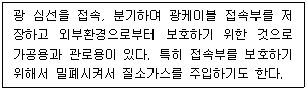
52. 입사한 광펄스가 반사해 돌아오는 시간을 측정하여 거리를 계산할 수 있다. 굴절률이 1.3이고 빛이 되돌아오는 시간이 2[μs] 걸렸따면 광케이블의 길이는 약 얼마인가?
53. 광케이블의 신호 전달의 기본원리는 빛의 어떤 성질을 이용한 것인가?
54. 초고속정보통신 특등급 아파트에 구비해야 하는 조건이 아닌 것은?
55. 다음 중 광섬유 손실측정법이 아닌 것은?
56. 2원 신호를 신호속도가 50[baud]인 전송부호로 전송할 경우 최단 펄스의 시간길이는 얼마인가?
57. 네트워크에서 동존간의 장비를 연결할 때 사용하는 방식은 UTP 케이블 양단의 끝을 TIA-568A와 TIA-568B로 연결하여 방식을 무엇이라고 하는가?
58. 광섬유의 전송손실의 종류가 아닌 것은?
59. 다음 중 광펄스 시험기(OTDR)를 활용한 측정과 관련된 설명으로 옳지 않은 것은?
60. 구내에 설치되는 주배선반 또는 주단자함에서 각 건물(또는 동)의 건물배선반, 동배선반 또는 동단자함을 연결하는 배선체계와 건물배선반 등을 상호 연결하는 배선체계로 옳은 것은?
4과목: 전자계산기일반 및 선로설비기준
61. 선로설비의 잡음전압이 얼마를 초과할 경우 전력유도 방지조치를 취하여야 하는가?
62. 다음 중 사용전 검사가 제외되는 공사로 옳은 것은?
63. 다음은 무엇에 대한 정의인가?
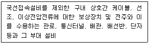
64. 발주자로부터 공사를 도급 받은 공사업자를 무엇이라고 하는가?
65. 다음 내용 중 ( ) 안에 알맞은 내용을 고르시오.
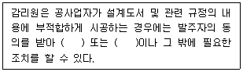
66. 정보통신공사의 발주자는 공사의 설계 또는 감리를 누구에게 발주하여야 하는가?
67. 8진수 3456.71을 2진수로 변환한 결과로 옳은 것은?
68. 10진수 47.625를 2진수로 변환한 결과로 옳은 것은?
69. 다음 중 CPU의 개념과 가장 거리가 먼 것은?
70. 다음 중 전자 계산기의 연산장치에서 부호와 크기의 가산(Adder) 과정에서 초과상태(Overflow)가 발생할 조건으로 맞는 것은?
71. 마이크로컴퓨터의 명령어수가 126개라면 OP Code는 몇 비트인가?
72. 2의 보수 표현 방법에 의해 10진수 36과 –72를 8비트로 올바르게 표현한 것은?
73. 다음 프로그래밍(Programming) 언어 중 숫자(2진코드)만을 사용한 언어는?
74. 다음 중 마이크로 컴퓨터의 필수 구성 장치로 틀린 것은?
75. 다음 중 정보통신공사업법에서 규정하는 사항이 아닌 것은?
76. 다음 중 과학기술정보통신부장관이 수립할 전기통신기본계획의 내용이 아닌 것은?
77. 10진수 4와 10진수 13에 해당하는 그레이 코드(Gray code)를 비트단위(Bitwise) OR 연산의 결과로 옳은 것은?
78. 다음 중 컴퓨터 프로세스에서 교착상태(Deadlock)를 발생키는 원인이 아닌 것은?
79. 다음 중 방송통신설비의 안전성 및 신뢰성에 대한 기술기준에서 사용하는 “응답스펙트럼”에 대하여 바르게 설명한 것은?
80. 정보통신공사업자가 아니어도 시공할 수 있는 공사의 범위로 옳지 않은 것은?